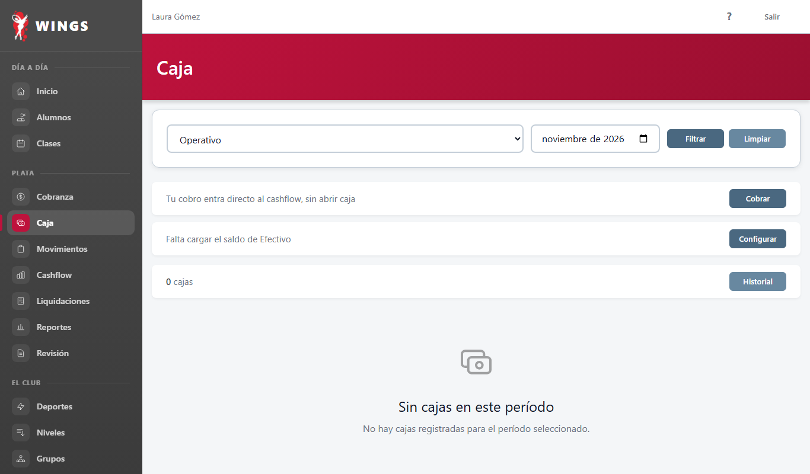
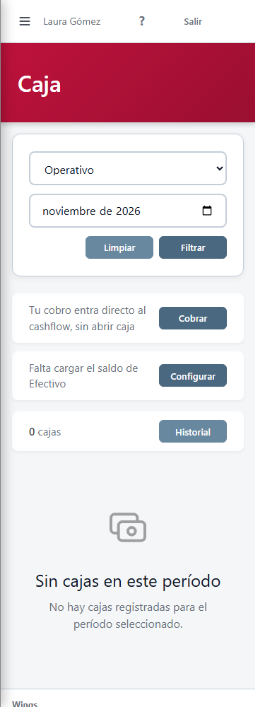
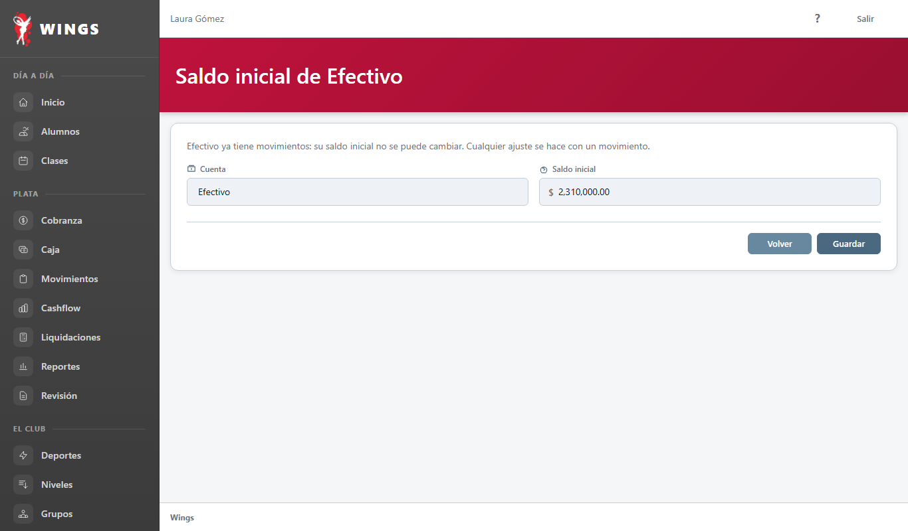
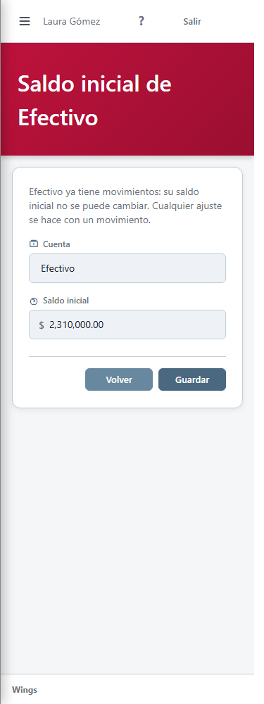
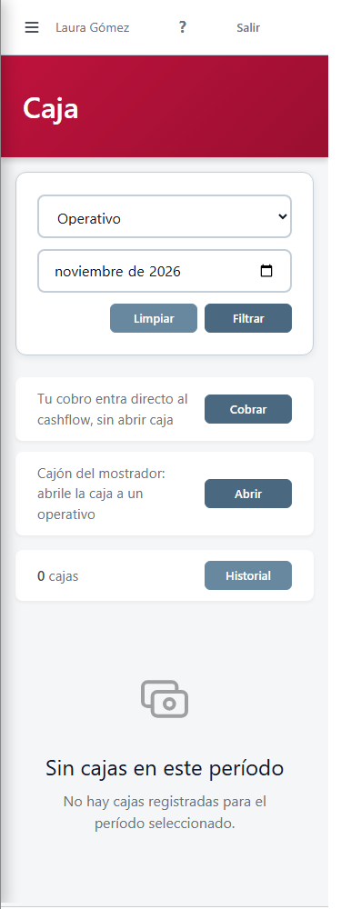
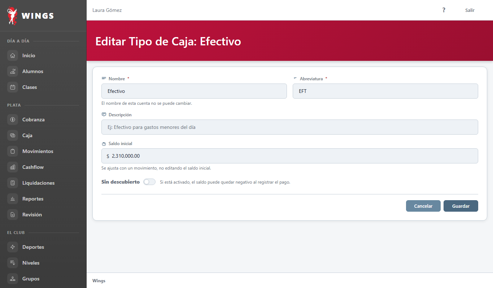
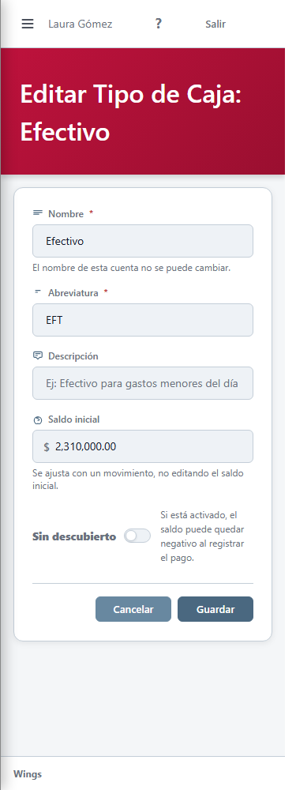

Es una propuesta: las vistas de Wings todavía no cambiaron. Capturas a 1366 y a 375 con el HTML real de cada pantalla y los componentes reales; solo se reemplazó la parte que cambiaría. Los importes y los nombres son de ejemplo.


Ya no hay lista de cuentas y no se nombra el cajón. El saldo arranca vacío para que haya que escribirlo.
El saldo se ve y no se edita. Guardar solo deja lista la cuenta para abrir cajas.


Configurar desaparece. Si alguien escribe la dirección de la pantalla, vuelve a Caja.


